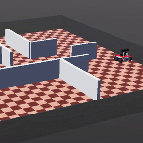
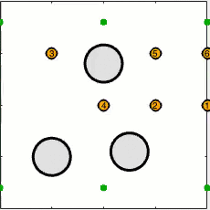
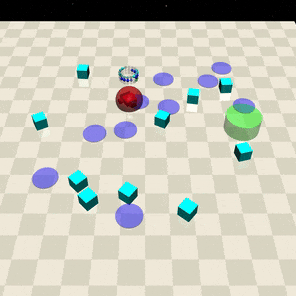

The publications below predate my doctoral research, and are included here for archival purposes only. My undergraduate thesis, advised by Dr. Udoka Nwaneto at the University of Nigeria, focused on model-based controller design for speed regulation in electric drives, and the two papers with Engr. Ihechiluru Okoro highlighted below grew out of that same effort. The first developed a combined armature-field speed control scheme for a separately-excited DC motor, and the second an observer-based active disturbance rejection controller that rejects unknown disturbances while preserving bandwidth and stability margin. After graduating, I spent a year at Robotics and Artificial Intelligence Nigeria, working with Dr. Olusola Ayoola on robot navigation and visual SLAM, then joined Kognitive Robotics as a robotics engineer building mobile robot platforms, before resuming graduate study at the University of Maryland. The arXiv preprint from that period proposes a Padé-approximation-based PID tuning technique for first-order processes with time delay. Together with the DC motor work, it built the modeling and simulation toolbox I leveraged in my early doctoral work with Prof. John S. Baras on multi-agent coordination and control, applied here to quadrotor leader-follower formation tracking under localization error.
Demos
Click to enlarge.
Pyramidal Formation Flight with Crazyflie Quadrotors

Risk-Sensitive Robust Path Planning

Safe Collective Control via Non-Smooth Barrier Functions

Safety-Aware Reinforcement Learning via Quantile Regression
Publications
2023
arXiV
Clinton Enwerem, John Baras, and Danilo Romero, “Distributed Optimal Formation Control for an Uncertain Multiagent System in the Plane,” arXiv preprint, 2023. arXiv link
@online{enweremDistributedFormationControl2023,
title = {Distributed Optimal Formation Control for an Uncertain Multiagent System in the Plane},
author = {Enwerem, Clinton and Baras, John and Romero, Danilo},
year = {2023},
eprint = {2301.05841},
eprinttype = {arXiv},
eprintclass = {eess.SY},
doi = {},
url = {https://arxiv.org/abs/2301.05841},
pubstate = {prepublished},
keywords = {Electrical Engineering and Systems Science - Systems and Control, Computer Science - Multiagent Systems},
}
2022
arXiV
Clinton Enwerem and Ihechiluru Okoro, “Optimal Controller Tuning Technique for a First-Order Process with Time Delay,” arXiv preprint, 2022. arXiv link
@online{enweremOptimalControllerTuningTechnique2022,
title = {Optimal Controller Tuning Technique for a First-Order Process with Time Delay},
author = {Enwerem, Clinton and Okoro, Ihechiluru},
year = {2022},
eprint = {2210.08187},
eprinttype = {arXiv},
eprintclass = {eess.SY},
doi = {},
url = {https://arxiv.org/abs/2210.08187},
pubstate = {prepublished},
keywords = {Electrical Engineering and Systems Science - Systems and Control, Mathematics - Optimization and Control},
}
2020
Heliyon
Ihechiluru S. Okoro and Clinton O. Enwerem, “Robust Control of a DC Motor,” Heliyon, Volume 6, Issue 12, e05777, 2020.
@article{okoroRobustControlDCMotor2020,
title = {Robust Control of a DC Motor},
author = {Okoro, Ihechiluru S. and Enwerem, Clinton O.},
year = {2020},
journal = {Heliyon},
volume = {6},
number = {12},
pages = {e05777},
doi = {10.1016/j.heliyon.2020.e05777},
url = {https://doi.org/10.1016/j.heliyon.2020.e05777},
}
2019
IEEE
Ihechiluru Okoro and Clinton Enwerem, “Model-Based Speed Control of a DC Motor Using a Combined Control Scheme,” In the Proceedings of the 2019 IEEE PES/IAS PowerAfrica, 2019.
@inproceedings{okoroModelBasedControlDCMotor2019,
title = {Model-Based Speed Control of a DC Motor Using a Combined Control Scheme},
author = {Okoro, Ihechiluru and Enwerem, Clinton},
booktitle = {2019 IEEE PES/IAS PowerAfrica},
year = {2019},
doi = {10.1109/PowerAfrica.2019.8928856},
}